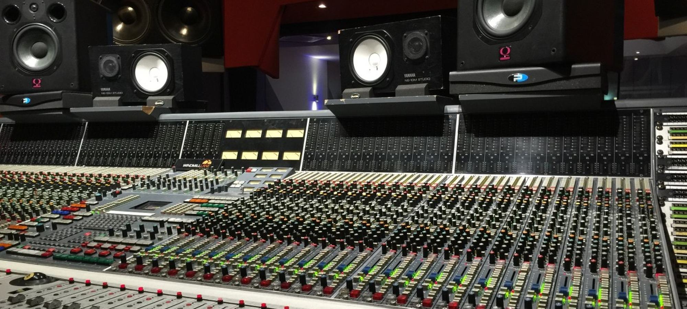
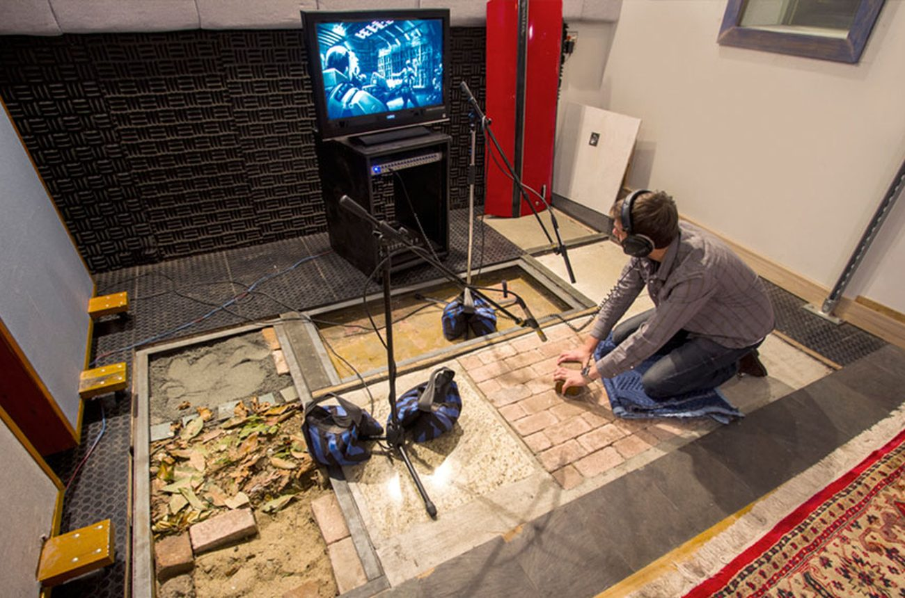

Quelle est la meilleure école pour devenir sound designer en 2026 ?
Six écoles de son comparées, du concours public au cursus privé en alternance.

Sound design pour le jeu vidéo, musique interactive, son à l’image. Nous comparons les diplômes, les frais, l’alternance et les projets menés avec des équipes de jeu ou d’animation.

Six écoles de son comparées, du concours public au cursus privé en alternance.


Six écoles de son comparées, du concours public au cursus privé en alternance.
Neuf écoles comparées sur les mêmes critères, diplômes vérifiés au RNCP et à la CTI, 14 classements et palmarès recoupés.
Huit écoles d’animation 3D et d’effets visuels comparées, 12 palmarès et classements recoupés, diplômes vérifiés au RNCP.
Six voies pour étudier le jeu vidéo ou l’animation 3D sans payer plein tarif pendant cinq ans.
Vous avez 17 ans, un carnet de croquis bien rempli et l’envie de travailler sur des films d’animation.

Ubisoft, Quantic Dream, Don’t Nod, Ankama.
Note globale sur 10 sur le seul univers sound design. La pratique sur de vrais projets de jeu et d’animation pèse autant que le diplôme.
Voir la méthode de notation


Comparez deux écoles de sound design sur nos cinq critères en un clic.
Pour le jeu vidéo et l’animation, ISART Digital obtient la meilleure note de notre panel (8,3/10) grâce aux projets menés avec les étudiants jeu et animation et à l’alternance dès la 2e année. Pour un diplôme d’État, l’ENS Louis-Lumière (8,1/10) reste la référence.
Cela dépend de l’école. L’ENS Louis-Lumière délivre un diplôme d’État de niveau master. La formation Music & Sound Design d’ISART Digital délivre un certificat d’école, compensé par 86 % d’insertion professionnelle sur les promotions 2022 à 2024.
De quelques centaines d’euros dans le public (ENS Louis-Lumière, ENJMIN) à 9 800 € par an chez ISART Digital, l’alternance de 2e et 3e année réduisant la facture.
Aucun bac n’est exigé. La sélection se fait sur dossier, entretien et portfolio sonore, avec une vraie pratique musicale attendue.
Un sound designer débutant en studio de jeu vidéo démarre autour de 28 000 à 32 000 € bruts par an en France, davantage en Amérique du Nord.
Un email par semaine, avec le classement du mois, les dates des journées portes ouvertes et les nouveaux comparatifs d’écoles.
Désinscription en un clic.